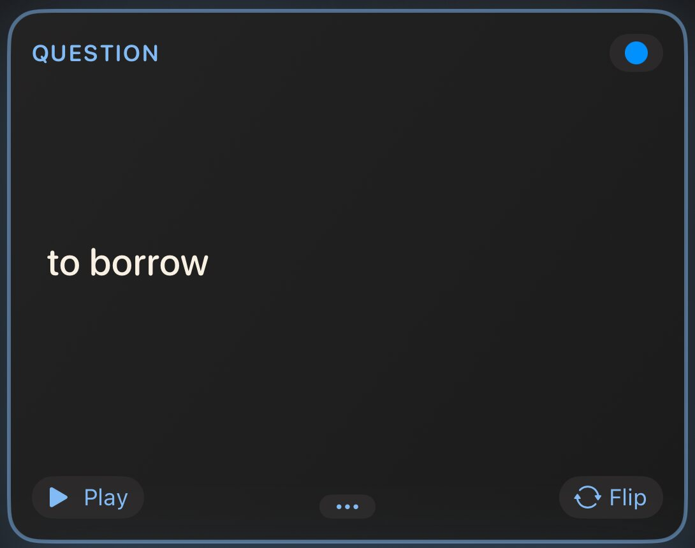
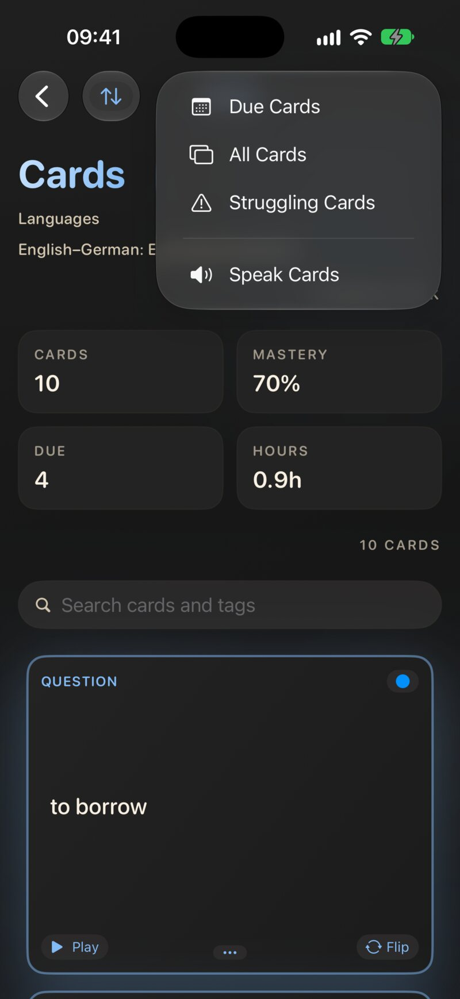
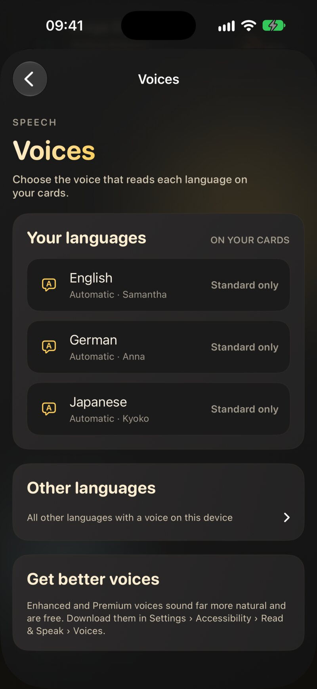
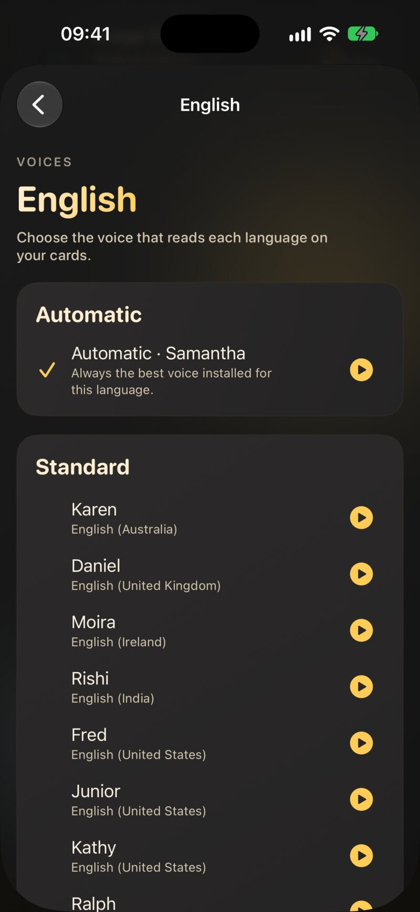

7.1 It all starts with the language
Before anything is read aloud, JustFlip! needs to know which language a side is in. Each side of a card has its own Language picker in the card editor (Chapter 3). The Spanish word on the front gets a Spanish voice, and its English meaning on the back an English one.
The picker offers these languages: English, English (US), English (UK), Czech, Spanish, French, German, Italian, Portuguese, Portuguese (Brazil), Chinese (Simplified), Chinese (Traditional), Japanese, Korean, Arabic, Russian and Hindi.
The first entry in the picker reads None (system default), but there is no default voice behind it. A side set to None is never spoken: it gets no Play button, and Speak Cards skips it. The same goes for a language that has no voice installed on your device. When a card stays quiet, check its language first.
A deck you import (Chapter 5) brings the languages set in the file. If a whole imported deck is silent, its cards probably arrived without a language. Set the language on each side in the card editor.
7.2 The Play button
Whenever a side has text and a voice for its language, a small Play button sits in the bottom-left corner of the card. Tap it to hear that side. It turns into Stop while it speaks, so tap it again to stop. The button appears on cards in the card list and during a review. It is free.

If the side also has a sound file (Chapter 4), an Audio button appears next to the Play button. The two are separate: Play reads the text with a synthetic voice, and Audio plays the sound file. Starting one stops the other.
7.3 Speak Cards (Pro)
Speak Cards reads a deck to you from start to finish, with no hands needed. Open a deck, tap the play button at the top of the card list and choose Speak Cards. To start part-way through, press and hold a card and choose Speak from Here.

For every card, JustFlip!:
- reads the question,
- waits four seconds, your moment to answer in your head,
- reads the answer,
- plays a short chime, then moves on to the next card.
While it plays, the card list follows along. The card being read is flipped to its answer during the answer phase and turned back afterwards. The play button at the top turns into a stop button (Stop speaking cards). Tap it to end the session.
Speak Cards reads the cards in the order the list shows them. Use the sort menu (Original order, Alphabetically, By Progress, By Urgency or Shuffle) before you start to change what you hear first. The voice speaks at the standard system speed. There are no settings for the pause, the speed or which side is read: every card is always read question first, then answer.
Speak Cards is a way to soak up a deck, not a test. Nothing is graded, your schedule doesn’t change, and the session doesn’t count towards your streak or statistics. Progress trackers are skipped. Use it alongside your reviews, not instead of them.
7.3.1 Which cards are read
A card is read only when both sides can be spoken: each has text, and each has a language with a voice installed. Other cards are skipped without a word, and the session goes on. If no card in the deck qualifies, JustFlip! tells you: No speakable cards available. Both sides need text and a supported TTS language.
Speak Cards reads text. It doesn’t play the sound files on a card, and a picture is silent unless you gave it a spoken hint (Chapter 3). A card whose answer is only a picture or a sound has no text to read, so the whole card is skipped.
7.3.2 Pro and free
Speak Cards and background listening are part of JustFlip! Pro. Without Pro, Speak Cards and Speak from Here still appear, with a lock, and tapping them opens the Pro screen. The Play button on a card and choosing voices in Settings are free for everyone.
7.4 Listening with the screen locked
Once Speak Cards is playing, you can lock your iPhone or switch to another app. The reading continues in the background, pauses and chimes included, so the phone can stay in your pocket.
When something else takes over the audio, such as a call, an alarm, or another app that starts playing, the session stops. It doesn’t pick up again when the call ends. Open the deck and choose Speak from Here on the card where you left off.
There are no play and pause controls on the Lock Screen or in Control Centre. To stop, open JustFlip! and tap the stop button in the card list.
JustFlip! also includes a Live Activity that shows the card being read on the Lock Screen and in the Dynamic Island. It is switched off in the current version while its updates are made reliable, and it will return in an update. Listening in the background works without it.
7.5 Choosing voices
Go to Settings › Speech › Voices. JustFlip! picks a voice for each language separately. The row’s subtitle summarises your choices, for example “English: Automatic · German: Anna”.

The screen has two lists:
- Your languages: the languages set on your cards. Each row shows the voice that will actually speak.
- Other languages: every other language with a voice on this device, folded away until you need it.
A language whose best installed voice is basic quality is marked Standard only. That’s your cue to download a better one (see Getting better voices).
Tap a language to see its voices:
- Automatic, at the top, shown with the voice it currently picks.
- Every installed voice for that language, grouped as Premium, Enhanced and Standard.
A checkmark marks your choice. Every row has a small play button to hear a sample first. The sample is a random card side from your own cards in that language, so you hear what the voice will really read. If none of your cards uses the language yet, the voice introduces itself with its name and its language. Tap the button again to stop.

7.5.1 What Automatic picks
Automatic always takes the best voice installed for the language: Premium first, then Enhanced, then Standard. When several voices share the best quality, it prefers the one iOS itself uses for that language, then a voice from your region (a US English voice on a US iPhone), and it leaves the retro-sounding Eloquence voices for last. Download a better voice and Automatic starts using it straight away, with nothing to change in JustFlip!.
Automatic keeps improving as you install voices. Pick a specific voice only when you have a clear favourite, such as a particular accent.
The voice you choose for Czech reads Czech sides, and only those. It never reads the English side of the same card. That side uses the English choice. The choice is made per language, not per variant, so a British voice chosen for English also reads sides set to English (US). If you delete a chosen voice from your device, that language quietly goes back to Automatic.
The novelty voices (Albert, Bahh, Bells and friends) and your Personal Voice are never offered, and Automatic never picks them. Novelty voices make poor teachers, and your Personal Voice stays yours.
7.6 Getting better voices
The voices that come with iOS are serviceable, but the Enhanced and Premium voices sound far more natural, and they are free. On iPhone and iPad, download them in the system Settings app:
Settings › Accessibility › Read & Speak › Voices
Choose a language, then a voice, and tap to download it. Premium voices are larger files, so use Wi-Fi. When the download finishes, go back to JustFlip!. The new voice appears under Settings › Speech › Voices and Automatic takes it at once. JustFlip! can’t open that settings page for you, which is why the Voices screen spells out the path under Get better voices.
7.7 Cloze cards out loud
A cloze card (Chapter 3) mustn’t give away its own answer, so its question is read with each blank replaced:
- by the word “blank” in the card’s language: “blank” in English, “Lücke” in German, “espacio en blanco” in Spanish, “prázdné místo” in Czech, and so on;
- or by the hint, if the blank has one:
{{c1::Paris::city}}is read as “city”.
The capital of France
is {{c1::Paris}}.The capital of France is […].
The voice says “The capital of France is blank.”
On the answer side, the whole sentence is read with the blanks filled in. In Speak Cards the answer phase reads the revealed sentence and then any extra notes from the answer side.
The answer of a cloze card lives inside its question, so Speak Cards reads the answer phase, notes included, with the question side’s language and voice. An answer side set to another language doesn’t change that. Write notes on a cloze card in the same language as the sentence.
7.8 Making cards sound right
When the voice stumbles over an abbreviation, a symbol or a formula,
a spoken hint tells it what to say instead:
[iOS]{eye oh ess}, $c^2${c squared}. Hints
work in exactly four places, and the braces are shown on the card
anywhere else. Chapter 3 explains them in full, in the section Tell
the voice what to say.
Everything in this chapter uses your hints: the Play button, Speak Cards and the voice previews.
7.9 When a card stays silent
| Symptom | Likely cause | Fix |
|---|---|---|
| No Play button on a side | the side has no language, or no text | set the side’s Language in the card editor |
| No Play button, language is set | no voice installed for it | download one in iOS Settings › Accessibility › Read & Speak › Voices |
| Speak Cards skips a card | one side can’t be spoken | give both sides text and a language |
| Speak Cards is locked | it’s a Pro feature | the Play button on each card stays free |
| The wrong accent | Automatic picked another variant | choose a voice under Settings › Speech › Voices |
| Listening stopped by itself | a call or another app took the audio | restart with Speak from Here |
| A cloze reads “blank” | that’s by design | add a hint, {{c1::…::hint}}, to hear the hint
instead |